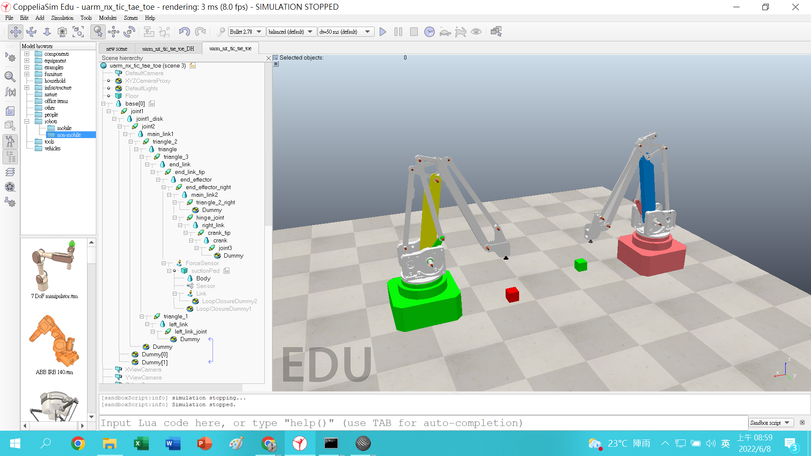
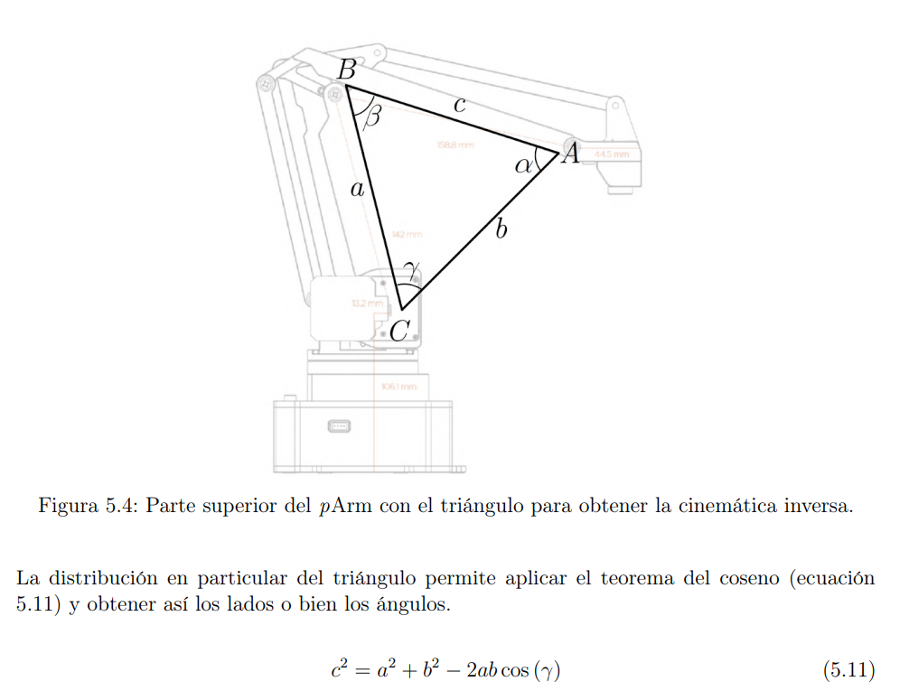
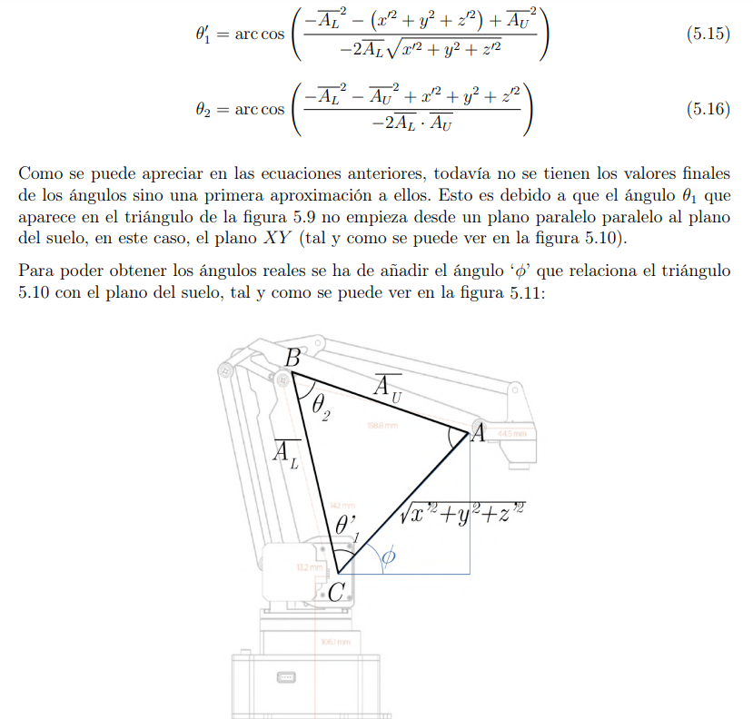
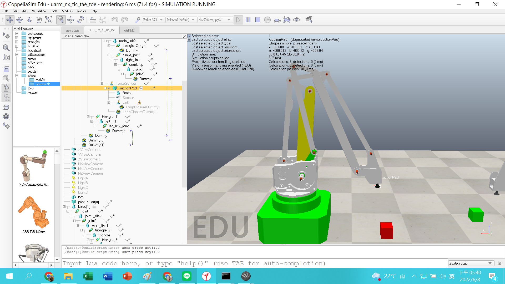
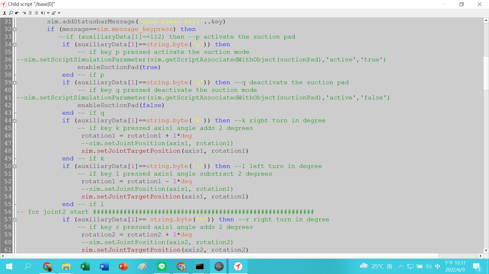
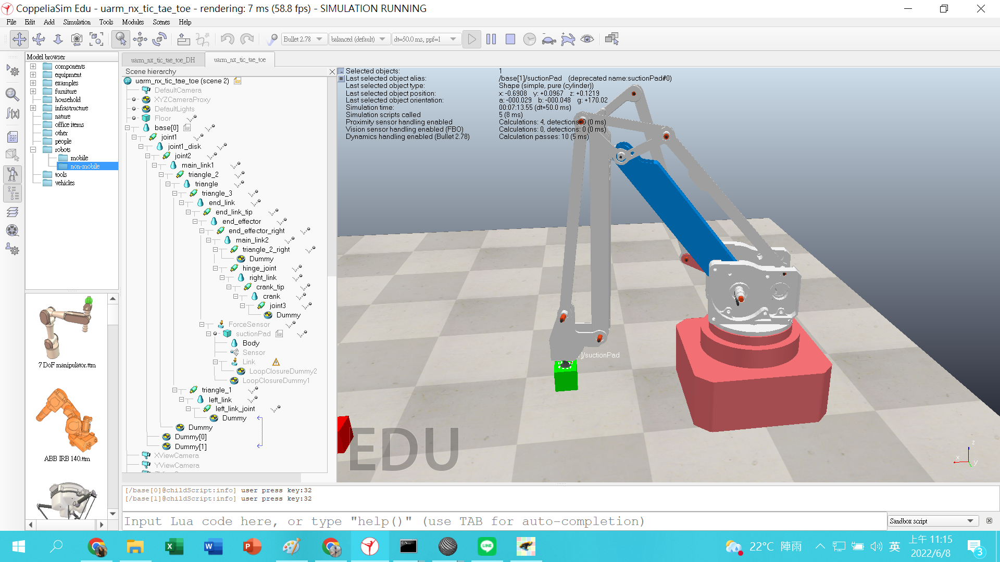
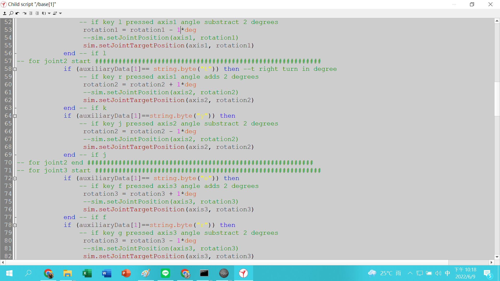

W16 <<
Previous Next >> Note
Online Exam

1.已知左側綠色底座的uArm機械手臂，其基座座標原點位於絕對座標(1.0, 0.25, 0)，啟動模擬後green_suctionpad_frame座標原點則位於 (0.22859,0.26047,0.36576)，請列出運算式說明，啟動模擬後 joint1，joint2 與 joint3 分別以逆時針旋轉5度後，求green_suctionpad_frame的絕對座標值。
joint1，L為順時針，K為逆時針
joint2，J為順時針，H為逆時針
joint3，G為順時針，F為逆時針
運用三角公式推算座標
得出x y z及各個角度
算出來green_suctionpad_frame的座標為(0.22859,0.26047,0.36576)


joint1，joint2與joint3分別以逆時針旋轉5度後的green_suctionpad_frame絕對座標值
(0.2695,0.1963,0.3815)


2.已知左側 uarm 前方的紅色方塊頂端中心座標值為(0.2, 0.4, 0.1)，請列出運算式說明左側 uarm 機械手臂的 joint1，joint2與joint3該如何旋轉才能讓end effector的吸盤末端中心點移動至紅色方塊頂端中心?
joint1，I為順時針，U為逆時針
joint2，Y為順時針，T為逆時針
joint3，R為順時針，E為逆時針
joint1先按下I順時針10度，joint2再來Y順時針27度調整，joint3為R順時針34度就可以接近紅色方塊的中心


W16 <<
Previous Next >> Note